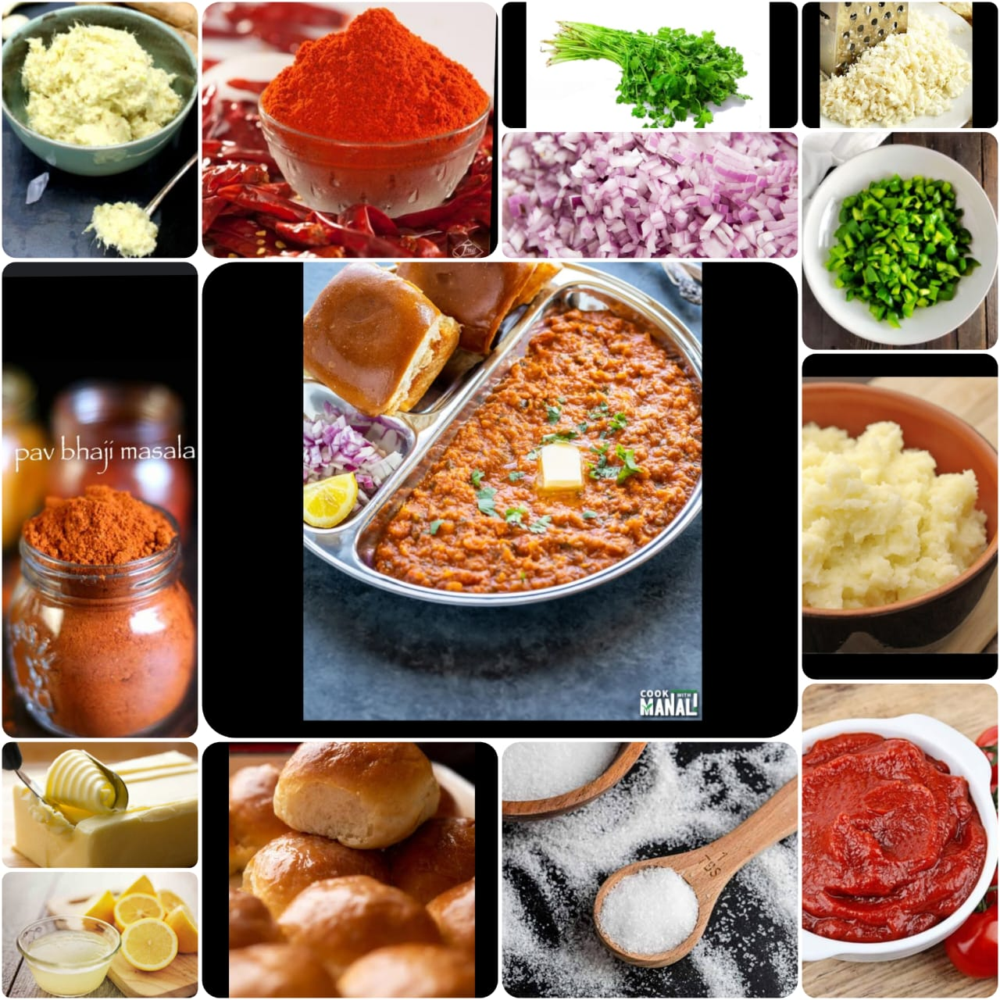

Pav Bhaji
Home
Pav bhaji is a spiced mixture of mashed vegetables in a thick gravy served with bread. Vegetables in the curry may commonly include potatoes, onions, carrots, chillies, peas, bell peppers and tomatoes. Street sellers usually cook the curry on a flat griddle (tava) and serve the dish hot. A soft white bread roll is the usual accompaniment to the curry, but this does not preclude the use of other bread varieties such as chapati, roti or brown bread.
Ingredients
Pavs 8
Potatoes boiled and mashed 2 cups
Cauliflower grated 3 tablespoons
Capsicum finely chopped 1/4 cup
Oil 3 tablespoons
Onions chopped 1 cup
Ginger-garlic paste 1 1/2 teaspoons
Tomato puree fresh 1 cup
Readymade tomato puree 1/4 cup
Salt to taste
Pav bhaji masala 1 1/2 tablespoons
Red chilli powder 1/2 teaspoon
Lemon juice 2 teaspoons
Butter 2 tablespoons
A few sprigs fresh coriander leaves
A lemon slice

Nutrition Facts
Calories 100g
Total Fat 5.0g
Cholesterol 250mg
Sodium 450.0mg
Total Carbohydrate 11.0g
Vitamin C 10%
Vitamin A 6%
Procedure
Heat oil in a non-stick pan, add ¾ cup chopped onions and saute. When they turn golden add ginger-garlic paste and saute.
Add cauliflower and saute. Add mashed potatoes and mix. Add fresh tomato puree and ready made tomato puree and mix well. Add ¾ cup water and mix and cook for 3-4 minutes.
Add green capsicum and mix well. Cover and cook for 3-4 minutes.
Add red chilli powder and lemon juice and mix. Add butter and mix
Chop coriander leaves and mix.
In another pan slightly toast pavs with butter.
Transfer into a serving bowl, garnish with remaining onion and a lemon slice and serve hot with pavs.
Expert Guide
Back ←
Scroll to Top ↑